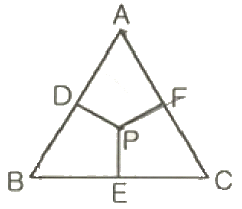
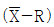

금속재료기능장 (2006-07-16 기출문제)
1과목: 임의 구분
1. 다음 중 철강에 사용되는 확산 피복 금속 중 질산, 염산, 묽은 황산에 대한 내식성이 가장 우수한 것은?
- S
- P
- Si
- Pb
(정답률: 63%)

2. 다음 중 화염 담금질법의 특징으로 틀린 것은?
- 부품의 크기나 형상에 제한이 없다.
- 국부담금질이 불가능하다.
- 설비비가 적게 든다.
- 담금질 변형이 비교적 적다.
(정답률: 64%)
3. 2차 경화란 어떤 경우를 의미하는가?
- 오스테나이트가 마텐자이트로 되어 경화되는 현상
- 고합금강에서 약 500℃ 이상의 뜨임온도에서 경화되는 현상
- 뜨임에 의해 인성이 증가되는 현상
- 내충격성이 향상되는 현상
(정답률: 65%)
4. 강철의 표준조직을 만들기 위한 열처리 방법으로 옳은 것은?
- Ac3 또는 Acm 변태점 이상에서 가열하였다가 공냉하는 것
- Ac3 또는 Acm 변태점 이상 가열하였다가 수중에 담금질한 것
- A1 변태점 이상 가열하였다가 노냉하는 것
- A1 변태점 이상 가열하였다가 공냉하는 것
(정답률: 89%)
5. 탄소강의 열처리 조직 변화에 관한 설명으로 틀린 것은?
- 순철은 약 1,538℃에서 용해하여 냉각시키면 δ→γ→α의 순으로 변한다.
- 오스테나이트가 페라이트로 변하는 선이 A3이며 시멘타이트가 석출하는 선은 Acm 선이다.
- 공석강을 만드는 점은 0.8% 탄소를 함유하며, 약 723℃ 부근에서 나타난다.
- 로안에서 냉각시 소르바이트, 공기 중에서 냉각시는 마텐자이트 조직이 된다.
(정답률: 80%)
6. 평균 근로자 수가 100명이 있는 직장에서 1년 동안에 8명의 재해자를 냈을 때 연천인율은 얼마인가?
- 70
- 75
- 80
- 85
(정답률: 100%)
7. 레이놀즈 수(Reynolds number)를 옳게 표현한 식은? (단, D: 관의 지름, V: 유체의 평균속도, v: 액체의 동점성계수이다)
- Re=VD/v
- Re=vD/V
- Re=VDv
- Re=v/VD
(정답률: 92%)
8. 현미경시험으로 소재를 검사하는 목적으로 틀린 것은?
- 금속조직의 형상과 조직을 관찰하기 위해
- 화학성분과 기계적 성질을 관찰하기 위해
- 비금속 개재물의 종류와 형태를 관찰하기 위해
- 전위와 석출물을 관찰하기 위해
(정답률: 71%)
9. 오스템퍼링(Austempering) 항온열처리시 얻을 수 있는 조직으로 옳은 것은?
- 펄라이트(Pearlite)
- 마텐자이트(Martensit)
- 소르바이트(Sorbite)
- 베이나이트(Bainite)
(정답률: 83%)
10. 다음 중 니켈-철 합금이 아닌 것은?
- 인바(invar)
- 콘스탄탄(constantan)
- 엘린바(elinvar)
- 수퍼인바(superinvar)
(정답률: 84%)
11. 방사선투과검사를 실시할 때 작업자는 안전관리에 특히 주의해야 한다. 방사선 피폭을 방호하거나 피폭량을 줄기 위한 필수 사항이 아닌 것은
- 방사선원과 사람사이의 거리를 가급적 멀리한다.
- 방사선원과 사람사이에 차폐물을 설치한다.
- 방사선관리 구역에 비상용 발전기를 설치한다.
- 방사선에 노출되는 시간을 줄인다.
(정답률: 81%)
12. 자기탐상시험과 관련이 없는 것은?
- 초음파
- 자장
- 탈자
- 전류
(정답률: 95%)
13. 구상흑연 주철의 조직이라 할 수 없는 것은?
- 마텐자이트형
- 펄라이트형
- 페라이트형
- 시멘타이트형
(정답률: 72%)
14. 염욕로(salt bath furnace)의 특징 중 틀린 것은?
- 무산화 상태의 처리가 가능하며, 산화 및 탈탄 등을 방지할 수 있다.
- 열전도에 의하므로 가열속도가 느리다.
- 대류가 좋고 균일한 온도 분포를 유지할 수 있다.
- 응고한 염욕로를 가열할 때 다량의 열량을 필요로 한다.
(정답률: 78%)
15. 열간금형용 합금공구강(STD61)의 담금질(quenching) 온도로 적당한 것은?
- 550℃∼650℃
- 820℃∼870℃
- 1,000℃∼1,⑤0℃
- 1,200℃∼1,250℃
(정답률: 58%)
16. 주강의 설퍼프린트 시험에서 Sc의 기호는 어떤 편석인가?
- 역편석
- 점편석
- 중심부편석
- 주상편석
(정답률: 73%)
17. 안전사고 예방 교육과 관련이 가장 적은 것은?
- 사고예방에 대한 인식 고취
- 사고예방 조치의 중요서에 대한 인식
- 작업공정의 신속화 교육
- 책임의 소재를 인식하게 하고 책임감 부여
(정답률: 59%)
18. 다음 중 금속간 화합물은?
- 페라이트9ferrite)
- 오스테나이트9austenite)
- 시멘타이트(cementite)
- 마텐자이트(martensite)
(정답률: 85%)
19. 안전점검으 실시하려고 할 때의 유의 사항으로 옳은 것은?
- 안전점검을 형식, 내용의 변화를 부여하지 않고 단일 방법으로만 점검한다.
- 과거의 재해발생 개소는 그 원인이 완전히 제거되었는지 확인할 필요가 없다.
- 불량 개소가 발견되었을 경우 다른 동종 설비에 대하여도 점검한다.
- 사소한 불량 개소는 점검하지 않아도 된다.
(정답률: 95%)
20. 다음 중 점결함에 속하는 것은?
- 나선전위
- 프렌켈결함
- 적충결함
- 칼날전위
(정답률: 74%)
2과목: 임의 구분
21. 다음 중 공업용 순철의 종류가 아닌 것은?
- 암코철
- 전해철
- 백선철
- 카보닐철
(정답률: 35%)
22. Fe-C 평형 상태도에서 각 변태점과 그 온도가 틀린 것은?
- A0: 약 210℃
- A1: 약 723℃
- A2: 약 768℃
- A3: 약 1,400℃
(정답률: 77%)
23. 압축시험에 관한 설명으로 옳은 것은?
- 압축시험은 취성재료보다 연성재료에 적당하다.
- 압축시험에서는 내부저항을 시험할 수 없다.
- 압축시험편으로는 취성이 있는 재료의 경우 길이와 직경의 비(L/D)는 1∼1.5배 정도가 적당하다.
- 인장강도과 파단면의 조직을 눈으로 확인할 수 있다.
(정답률: 50%)
24. 초점과 필름사이의 거리 60mm, 관전압 200KVP, 관전류 5mA 및 노출시간 3분의 조건으로 활영하였다. 초점과 필름사이의 거리를 80mm로 바꾸었을 때 노출시간은?
- 2.33분
- 3.33분
- 4.33분
- 5.33분
(정답률: 57%)
25. 다음 재료 중 오스테나이트(Austenite)화 온도(또는 quenching 온도)가 가장 높은 재료는?
- SCM440
- SKH51
- STC3
- STD11
(정답률: 80%)
26. 인장시험에서 표점거리 50mm의 시험편을 시험한 후 표점거리가 60mm가 되었다면 이 때 연신율은?
- 16.7%
- 20%
- 33.4%
- 40%
(정답률: 73%)
27. 다음 중 면심입방격자의 원소들로 이루어진 것은?
- Ba, Pb, Cd
- Ag, Ca, Cu
- Be, Mg, V
- Cr, K, Ni
(정답률: 88%)
28. 제어하고자 하는 대상의 물리량과 목표로 하는 갓을 끊임없이 비교하여 그 차를 될 수 있는 대로 작게 하여 목표치에 접근시키는 방법은?
- 시퀀스제어
- 수치제어
- 피드백제어
- 원방제어
(정답률: 67%)
29. 금속박판의 연성판재를 가압 성형하여 변형 능력을 시험하는 시험 방법은?
- 피로시험
- 충격시험
- 크리프시험
- 에릭션시험
(정답률: 85%)
30. 황동의 가공재를 상온에 방치하거나 저온 풀림 경화시킨 스프링재가 사용 도중 시간의 경과에 따라 경도 등 여러 가지 성질이 악화 되는데 그 원인은 가공에 의한 불균일 응력이 균일화하는데 기인되며 가공도가 낮을수록 심하게 나타나는 이 현상을 무엇이라 하는가?
- 경년변화
- 자연균열
- 고온 탈아연
- 탈아연 부식
(정답률: 89%)
31. Gilding metal은 coining 하기 쉬워 화폐, 메달 등에 적용되는 실용 황동으로 사용된다. 그 성분비가 옳은 것은?
- 95%Cu+5%Zn
- 80%Cu+20%Zn
- 70%Cu+30%Zn
- 60%Cu+40%Zn
(정답률: 73%)
32. 방사선을 투과시킨 필름을 현상처리한 후, 필름의 유제(乳劑)막 중에 환원되지 않고 남아있는 할로겐화 은염(銀髥)을 제거하고 현상된 은입자를 영구적인 상으로 만들기 위한 과정을 어떤 과정이라 하는가?
- 정지
- 제거처리
- 정착
- 세척처리
(정답률: 77%)
33. 해저 가스, 원유 채굴 및 관련 시설의 운전 시 해수에 의한 침식으로 공식 및 균열이 빈번하게 발생되므로 이를 고려하여야 한다. 다음 중 해수를 처리하기 위하여 사용되는 고성능복수기, 열교환기 및 각종 해수와 접하는 부분의 부품으로 흔하게 사용되는 니켈-동의 합금은?
- 백동
- 포금
- Uurana Metal
- Muntz Metal
(정답률: 70%)
34. 현상 처리되지 않은 필름이 저준위의 방사선에 조사되거나 습도나 온도가 높은 곳에 장시간 방치될 경우 나타나는 결과는?
- 안개상의 현상이 나타난다.
- 녹색 반점이 생긴다.
- 흰 반점이 생긴다.
- 정전기 표시가 나타난다.
(정답률: 85%)
35. 강재 내부에 불순물로 수소가스가 존재하면 응력을 발생시켜 압연이나 단조시에 미세한 균열의 원인이 되어 생기는 결함은?
- 연점
- 백점
- 담금질 균열
- 담금질 얼룩
(정답률: 70%)
36. 압력의 단위를 MLT계로 나타내면? (단, M: 질량, L: 길이, T: 시간)
- ML-2
- ML-1T-2
- ML-2T2
- ML-2T-2
(정답률: 75%)
37. 다음 중 상온에서 열전도율이 가장 큰 금속은?
- 구리
- 알루미늄
- 은
- 철
(정답률: 67%)
38. 금속침투법(cementation) 중 강재표면에 알루미늄(aluminium)을 침투시키는 방법은?
- 칼로라이징(calorizing)
- 크로마이징(chromizing)
- 실리코나이징(siliconizing)
- 보로나이징(boronizing)
(정답률: 75%)
39. 피로시험의 S-N 곡선에서 S와 N의 의미는?
- 응력과 변형
- 응력과 반복횟수
- 반복횟수와 시험기간
- 반복횟수와 변형
(정답률: 83%)
40. 다음 중 초음파의 종류가 아닌 것은?
- 종파
- 횡파
- 판파
- 내면파
(정답률: 75%)
3과목: 임의 구분
41. 유입 에너지를 직선왕복 운동으로 변환하는 기기는?
- 유압회로모터
- 유압실린더
- 유압밸브
- 베인펌프
(정답률: 87%)
42. 충격시험은 재료의 어떠한 성질을 알기 위한 시험인가?
- 인장강도
- 굽힘강도
- 인성과 취성
- 경도
(정답률: 78%)
43. 용융점이 높은 금속의 순서로 나열된 것은?
- Fe＞W＞Cu＞Al＞Zn
- W＞Cu＞Fe＞Al＞Zn
- Fe＞Cu＞W＞Zn＞Al
- W＞Fe＞Cu＞Al＞Zn
(정답률: 85%)
44. 초음파 탐상시험을 하려고 할 때 기름 등의 접촉 매질 사용하는 가장 큰 이유는?
- 초음파를 효과 좋게 시험체에 전달시키기 위하여
- 시험체와 탐촉자와의 마찰을 크게 하여 탐촉자의 전 원활하게 하기 위하여
- 탐촉자를 접촉시킬 때 시험체 표면에 홈을 주어 초전달을 원활하게 하기 위하여
- 시험체의 표면결함을 쉽게 확인하기 위하여
(정답률: 91%)
45. 접촉식 온도계로서 서로 다른 두 금속을 접합시키면 그에 기전력이 발생한다는 제에벡(Seeback) 효과를 이용한 온도계는?
- 적외선 고온계
- 저항 온도계
- 광 고온계
- 열전대 온도계
(정답률: 78%)
46. 각종 기계부품 및 압력구조물에서 뜨임취성에 의한 시생이 보고되고 있다. 다음 중 강의 열처리 시에 뜨임을 방지하기 위한 대책으로 틀린 것은?
- P, Sb, N 등을 가능한 한 감소시키고 고온뜨임 후에 급냉한다.
- 오스테나이트 결정립은 미세화시키고 탄소강에서는 따라 0.2∼0.5%의 Mo을 첨가한다.
- 담금질할 시는 완전한 마텐자이트화를 시키고, 오스퍼링 처리하여 높은 인성을 얻도록 한다.
- 무확산변태로 생긴 마텐자이트의 과포화된 탄소를 자이트 및 탄화물로 분해하지 못하도록 300℃, 500℃ 전후에서 뜨임처리를 한다.
(정답률: 56%)
47. 주철을 구분할 때 공정주철의 탄소함량은 약 몇 %C인가?
- 2.1
- 4.3
- 6.4
- 7.7
(정답률: 66%)
48. 담금질 처리시 연점(soft spot)이 생기는 것을 방지하는 대책으로 틀린 것은?
- 노내 온도 분포를 고르게 한다.
- 가열 온도 및 가열시간을 적절하게 한다.
- 냉각제를 충분히 교반한 후에 담금질한다.
- 탈탄 부분을 제거하기 전에 담금질한다.
(정답률: 74%)
49. 다음 중 압입에 의한 경도 측정이 아닌 것은?
- 모스 경도(Mohs Hardness)
- 브라셀 경도(Brinell Hardness)
- 로크웰 경도(Rockwell Hardness)
- 비커즈 경도(Vickers Hardness)
(정답률: 90%)
50. 다음 그림에서 P 조성합금 중의 C 성분의 양은?

- P-F
- P-E
- D-P
- B-E
(정답률: 65%)
51. 강과 내의 화학조성 불균일로 발생한 편석을 제거하기 위하여 실시하는 열처리의 명칭은?
- 응력제거 어닐링(stress relief annealing)
- 구장화 어닐링9spheroidizing annealing)
- 확산 어닐링(diffusion annealing)
- 재결정화 어닐링(recrystallization annealing)
(정답률: 47%)
52. 자성재료의 표면 및 표면부근의 결함을 검출하기 위해 자분탐상시험(Magnetic Particle Test)을 하고자 한다. 다음 재료 중 자분탐상시험에 가장 적합한 재질은?
- 알루미늄
- 오스테나이트계 스테인리스강
- 탄소공구강
- 두랄루민
(정답률: 70%)
53. 구상흑연주철 제조시 황(S)은 흑연구상화를 현저하게 저해하는 원소이고 구상화처리 후 용탕에 황(S)이 0.02% 이상 함유되면 완전한 구상화가 어렵게 된다. 용탕 내의 황(S)의 양을 낮추는 방법으로 잘못된 것은?
- 배합 재료로는 S, P의 함량이 낮은 것을 사용한다.
- 황의 함량을 낮추기 위하여 가성소오다를 첨가한다.
- 용해로 중의 용해과정에서 탈황한다.
- 용탕을 노외에서 탈황한다.
(정답률: 73%)
54. 18-8 스테인리스강의 입계부식 방지에 대한 설명으로 틀린 것은?
- 고온으로 가열하여 Cr 탄화물을 오스테나이트 중에 용체화처리한 후 급냉한다.
- Cr 탄화물의 석출이 일어나지 않도록 탄소량을 줄인다.
- 결정립에 가까운 부분에 있던 Cr 원자가 탄소원자와 경합하도록 한다.
- Cr 보다 탄화물 형성이 더 큰 Ti, Ta 등의 원소를 첨가하여 안정화 시킨다.
(정답률: 54%)
55. 어떤 측정법으로 동일 시료를 무한 횟수로 측정하였을 때 데이터 분포의 평균치와 참값과의 차를 무엇이라 하는가?
- 신뢰성
- 정확성
- 정밀도
- 오차
(정답률: 83%)
56. 축의 완성지름, 철사의 인장강도, 아스피린 순도와 같은 데이터를 관리하는 가장 대표적인 관리도는?

관리도- nP 관리도
- c 관리도
- u 관리도
(정답률: 74%)
57. 공정분석 기호 중 □는 무엇을 의미하는가?
- 검사
- 가공
- 정체
- 저장
(정답률: 69%)
58. 생산계획량을 완성하는데 필요한 인원이나 기계의 부하를 결정하여 이를 현재인원 및 기계의 능력과 비교하여 조정하는 것은?
- 일정계획
- 절차계획
- 공수계획
- 진도관리
(정답률: 64%)
59. TPM 활동의 기본을 이루는 3정 5S 활동에서 3정에 해당되는 것은?
- 정시간
- 정돈
- 정리
- 정량
(정답률: 63%)
60. PERT에서 Network에 관한 설명 중 틀린 것은?
- 가장 긴 작업시간이 예상되는 공정을 주공정이라 한다.
- 명목상의 활동(Dummy)은 점선 화살표(→)로 표시한다.
- 활동(Activity)은 하나의 생산작업요소로서 원(○)으로 표시된다.
- Network는 일반적으로 활동과 단계의 상호관계로 구성된다.
(정답률: 54%)